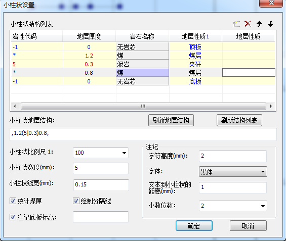
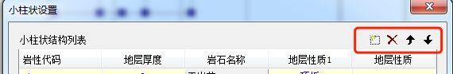
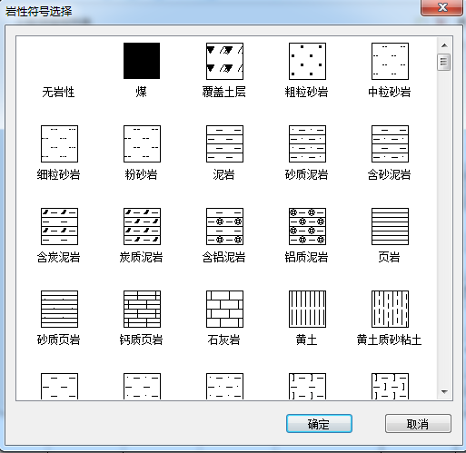
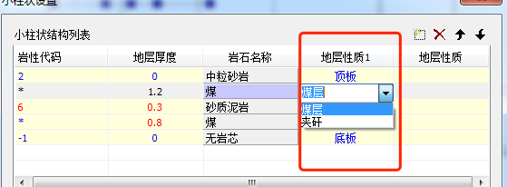
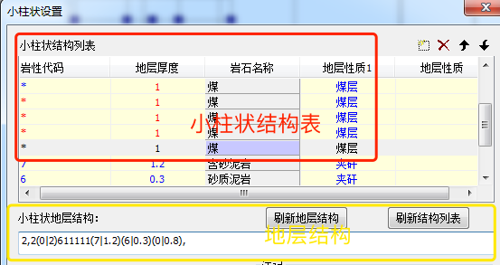
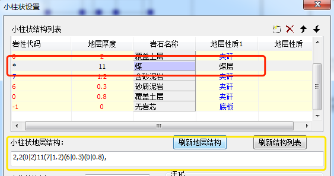
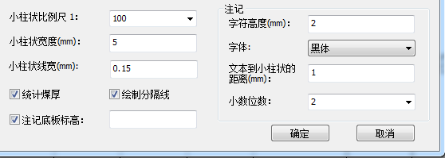
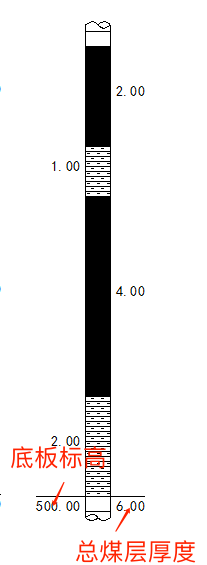
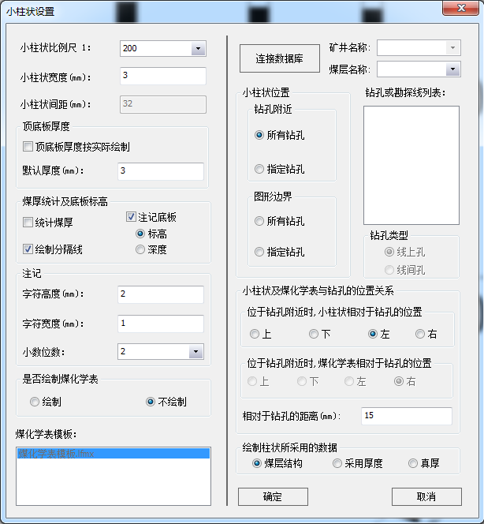

小柱状图业务逻辑
基础功能
绘制小柱状

小柱状图结构列表
- 实现岩层功能:
增删改查移动
 岩性代码点击输入地层岩性代码。地层厚度点击输入地层的厚度，单位米。岩石名称点击进入岩性符号选择对话框选择相应的地层岩性
岩性代码与岩石名称是一一对应的关系，用户只需选择任何一个。地层性质点击设置地层的性质，默认的有顶板底板两层，且不能修改和删除。其他可以选择煤层夹矸。

- 实现岩层功能:
小柱状地层结构
小柱状图结构列表的数字展现小柱状地层结构与小柱状图结构列表可以相互转换小柱状地层结构与小柱状图结构列表可以合并同类项，例如：ABBA会合并成ABA展示。


常规设置
小柱状比例尺：设置所需要的小柱状的比例尺。小柱状宽度(mm)：设置生成小柱状的宽度。小柱状线宽(mm)：设置生成小柱状的划线宽度。统计煤厚：选择是否统计煤厚。绘制分隔线：选择是否绘制分隔线。- **
注记底板标高**：选择是否注记底板标高，若选择注记则需要输入底板标高值。 注记：设置小柱状注记的高度、字体、精度及文本到小柱状的位置。

缓存小柱状参数，增加一键快捷绘制功能
生成煤层小柱状
煤层小柱状设置

小柱状间距：设置小柱状间的距离。当右侧【小柱状位置】处选择【图形边界】时，此处才可以进行设置。顶底板厚度：设置提取的煤层小柱状的顶底板的厚度，可以按照实际绘制，也可以给定一个默认值。煤厚统计及底板标高：设置小柱状是否统计煤厚、是否绘制分隔线及是否注记底板标高。注记：设置小柱状注记的高度、宽度及精度。是否绘制煤化学表：选择是否绘制煤化学表。若选择绘制，则需要在下面的窗口中选择相应的模版。- `连接数据库v：点击此按钮进行数据库连接。前提是数据库有配置。
- `煤层名称v：连接数据库后，在此处选择需要绘制柱状图的煤层号。
小柱状位置：设置要绘制的小柱状的放置位置。可以选择钻孔附近，也可以选择放置图形边界位置。矿井名称：若数据库中只有一个矿井名称，此处不可选；若有多个矿井名称，则需要选择。钻孔或勘探线列表：选择要绘制的钻孔或勘探线名称。当【小柱状位置】选择【图形边界】的【所有钻孔】时，此处为勘探线列表，为其他选项时，此处为钻孔列表。钻孔类型：选择钻孔类型。当小柱状位置选择“图形边界”的【所有钻孔】时，此处可选。小柱状及煤化学表与钻孔的位置关系：当小柱状位置选择【钻孔附近】时，此处可设置。绘制柱状所采用的数据：设置绘制小柱状时所采用的数据。